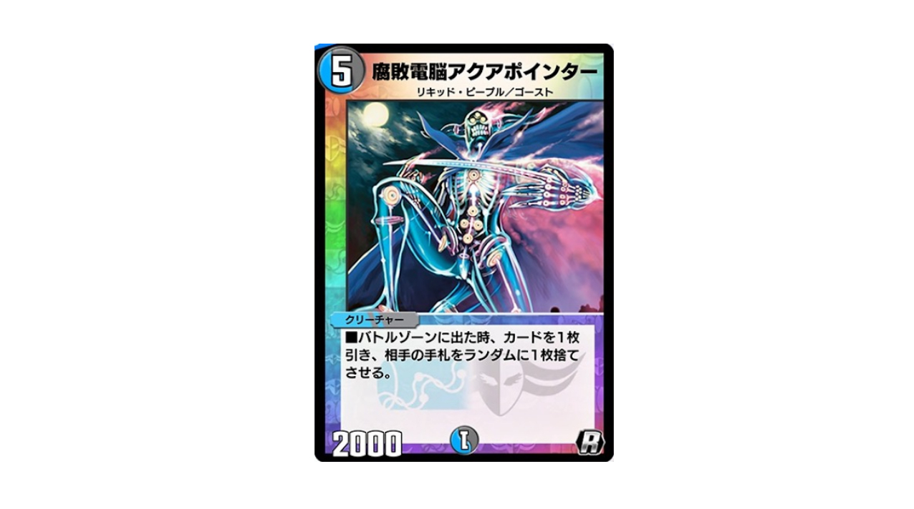
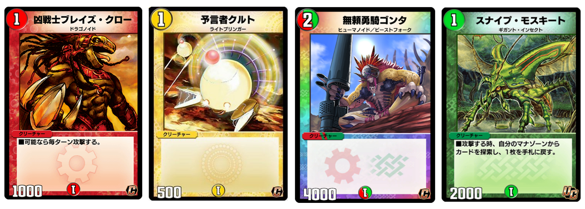
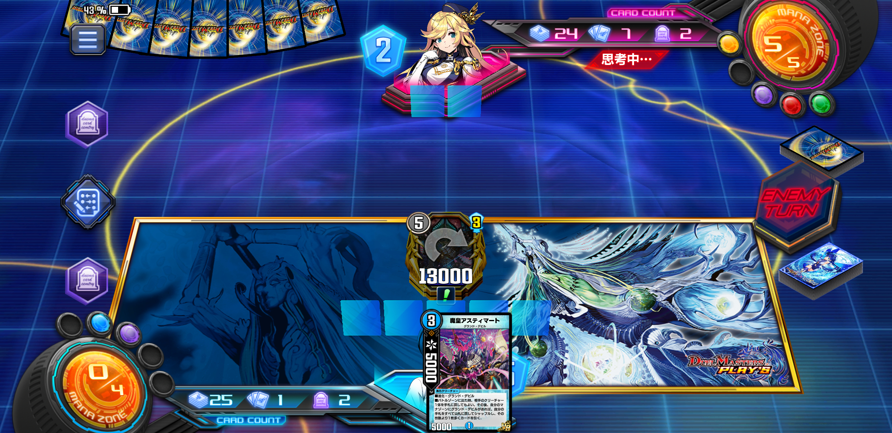

MGプルート・デスブリンガーを組み立てる
速攻デッキで戦いたい！
オルゼキアカップ終盤から現在にかけて、さらにその強さが広く知れ渡りAll、New両方のランクマッチを席巻しているアガピトス。もはや天門すらなくとも、マナブーストから早期着地する盤面制圧カードとなり、まさかの中速ビートダウン環境をデュエプレに作り出している。
特にオルゼキアカップ最終1位、2位を達成したGAE軸デッキにもアガピトス4枚とミラー対策カードが搭載されており、その影響力たるや凄まじいものがある。
↑海月さんによる8弾EX環境考察。今回も広く収集されたデータからEX環境をわかりやすく解説してくださっています。ここを読んでもらうと、この記事ももっとわかりやすくなるかもしれません。
【デュエプレ】GAEコントロール【オルゼキアカップND1位&2位！！】
オルゼキアカップで1位&2位、32位、96位を達成された、調整チームによるデッキ解説です。構築理由がわかりやすく、また深い、とても面白い記事です。今の環境の主流になりつつあるため、必見です。同時に友達とデッキ調整する楽しみを思い出させてくれます。
これにより多くの速攻デッキがアガピトス、ゲキメツにより制圧され、コントロールもその両方を取り込み続けている。アガピトスを制する者がランクマッチを制する、そんな雰囲気がデュエプレ界隈に漂っている。
自分はというと、アガピトス入りドリームメイトをロマネスクカップから回し続け、正直かなり勝率が怪しくなってきている。アガピトスミラーは増え続け、メタカードの応酬により勝率は伸び悩む一方。いつしか、「逆にこれはもうアガピに頼らない方が良いのでは？」と思うようになってきた。
そこでまずアガピトスの弱点を探り、そこからデッキを基軸を探ることをスペル・デルフィンカップから始めた。
もくじ
- アガピとまともにやりあってはいけない
- アガピの弱点を探れ
- グランド・デビルを使いたい
- プルート・デスブリンガー
- デモハンさえ踏まなければな！！
- 頭を使う速攻デッキ
アガピとまともにやりあってはいけない
ネットも駆使して情報収集した結果、以下のようなことがわかった。
- 現在は2マナブーストからフェアリー・ギフトでアガピかゲキメツを出すのが強い
- 聖騎士ヴォイジャーを入れることでアガピトス着地の安定感が増している
- アガピ＋アラゴナイトのコンボでパワー5000以下のクリーチャーの生存率がかなり低い
- 逆に一部のデッキを除き、反撃トリガー枚数は8枚程度とわりと薄め
- アガピトスにガレックを返したとしても、増えたマナや除去されたクリーチャー分を計算するとアド差-3が-1になっているに過ぎない
- 全体的に3ターン目前後までマナブーストに頼るデッキが多め
4ターン目付近からアガピトスが着地を始めるため、従来の赤緑などの速攻デッキでもなかなか苦しい試合を要求されている。4ターン目までに4枚積みのカードを引ける確率は61~66%で、この確率でアガピトスが登場するだけで辛いが、途中ヴォイジャーをかませるとコスト軽減しながら後攻70%まで上がる。また、パンダネルラのように毎回早期着地を狙う必要はなく、天門などで待ち構えることもできる。
またアラゴナイトがほぼ確実に同伴しているため、普通に3ターン目から5000ラインをタップキルで時間稼ぎされるのも強力だ。
特にトリガーを踏むわけでもなく、大型フェニックスでド派手に負けるわけでもなく、相手のマナブーストから気づかないうちにアド差がつきヌルっと負けていることが多いのではないだろうか。
もちろんアガピトスだけでなく、フェアリー・ギフトからゲキメツが登場するもの強いし、天門の強さも安定している。これでは中途半端なビートデッキでは勝ち目がないのだろうか。
アガピの弱点を探れ
アガピの強さを支えているのが本体の生み出す圧倒的なアドバンテージ差と、それを安定させるマナブーストを可能にする周辺カードであるのがわかってきた。
デュエルマスターズのセオリーでいうと、こうしたマナブーストから大型クリーチャーにつなげるデッキは、手札破壊と速攻に弱いことが多い。

マナブーストをする分序盤から多く手札を切るため、ドローが薄い上に残った切り札を手札破壊でピンポイントに狙われると一気に失速する。アガピトスも例外ではなく、うまく手札破壊を決められれば数ターンは優位に立てる。
が、現環境では自分が使うことは諦めた。アガピトスはこの弱点を克服するためにヴォイジャーやGAEでリソースを確保する手段を整えていることと、増えたマナからアガピ以外にゲキメツなどのカードを今引きで召喚されることがあるからだ。手札破壊は強力ではあるものの、その枚数だけ自分も攻め手を手札破壊カードに割いているため、なんだかんだでジリ貧になりがちだと思う。
赤黒の「呪いテラーコントロール」並の構築がないと厳しいのと、自分はそれを扱うの下手なので、ちょっとやめておく。

4ターンキルを狙えるだけの速攻デッキも、マナブースト系デッキに対して分があることが多い。マナブースト分、序盤のクリーチャーとシールドトリガーが薄くなりがちなので、6マナ圏以上のクリーチャーが召喚される前に決着をつけることができるからだ。
実際、スペル・デルフィンカップ序盤のデッキはかなりのデッキがマナブーストのギミックを取り入れており、速攻の通りはなかなか悪くないのではないかと感じていた。が、相変わらず天門の42%が環境トップで待ち受けていることや、トリガー以外にフェアリー・ギフトが絡んだアガピとゲキメツの制圧力が凄まじく、そこまで有利とまではいかない印象だ。
だが、ハンデスよりかは勝ち目が見える気がすることと、自分が速攻デッキが好きなので、今回は速攻デッキを作ることを考えることにした。
なんかこう、ないだろうか。もしアガピを出されてもタップキルされず、アド差を無視して勝負を決められるデッキ……。
グランド・デビルを使いたい
今回ランクマッチに潜る上でアガピトスを警戒するのと同時に、もう一つグランド・デビルを使いたいという欲求があった。EXパックでグランド・デビルも強化を受けたものの、どうもいまいちランクマッチでは目立って活躍していないらしい。自分は紙の不死鳥編での活躍が強く記憶に焼き付いているだけに、ちょっと使ってみたいという気になっていた。
が、切り札とされるネプチューンシュトロームが一部弱体化を受けており、強力ではあるものの非常に安定性にかけるカードになっているのがネックだった。メテオバーンを一気に3枚消費するようになってしまったため、実際に使ってみるとかなりしんどい。
実質「バトルゾーンに出た時、自分のクリーチャー3体を墓地に置き、相手のクリーチャーを全て山札に加えシャッフルする」という効果に近い。メテオバーンを抱えたまま6ターン目付近に待機してもデーモンハンドが待っているだけであり、急いで使ったとしても自分のクリーチャー3体を一気に失う効果のため、相手のクリーチャー3体を除去してやっと釣り合う。その上メテオバーンのタイミングがアタックトリガーのため、相手に3枚の手札を与えてターンを譲ってしまう。
対人戦ではネプチューンを警戒して立ち回られれば、簡単に対策されてしまう効果になっている。
またデッキエンジンがスナイプアルフェラス、メディカルアルナイルの2枚のシステムクリーチャーに頼っているため、アガピトスによるタップキル、除去コンの狙いうちに非常に脆く、今の環境にはどうも向いていないのかもしれない。
プルート・デスブリンガー
しかし、ネプチューンでもギガブリザードでもない、現環境に対する戦い方をグランド・デビルは備えていた。マーズディザスター、ジュピターキングエンパイアと並び、もう来ないだろうと諦められていた除去耐性皆無フェニックス、プルート・デスブリンガーである。
発表当時は、なぜこのラインナップにVRでこのカードだけ収録されるのかがわからなかったが、実際に使ってみてその強さがわかった。アガピトスやゲキメツ、パンダネルラ、驚天の超人などに強烈に刺さる進化クリーチャーとなっていた。
その実、1体しか出てこないかわりに、毎ターンデーモンハンドを撃ってくるツヴァイランサーだった。
ということで、4ターン目にプルートデスブリンガーに進化GVして殴り切る速攻デッキにしてやった。
最初はプルートが2枚だったものの、使うたびにアガピトスを切り返していくためどんどん枚数が増えていき4枚に。ついにはギガブリザードを押しのけシールドトリガーすら押しのけ、完全にメインを張るまでになった。
何が何でも4ターン目に着地させたいため、レインボー以外の2コスト以下進化元をストリウムを合わせ16枚に。後述するが、このデッキの負け筋を考えると、シールドトリガーで武装する意味がどんどん薄れていったため完全に安定性に振った。
ちなみに意外と安い。
グランド・デビルからなら3・4ターン目に進化可能
2コストクリーチャーが多いグランド・デビルなら、あのツヴァイランサーと同等の速度でバトルゾーンに現れる。1コストのウェバリスをもつぶん、デスパペット軸やティラノ・ドレイク軸よりも早く安定して場に出せる。
場合によっては破壊された味方を手札に戻せるメディカルアルナイル、ウェバリスとパワー3000ラインを作れるエリゴウル、2マナで手札交換と墓地肥やしができるフォルカロル。またブロックされないハリセンモンや、ストリウムやポワワンなどのデスパペットもすんなり入るのも強い。
2コストバニラクリーチャーを積まなければいけないツヴァイと比較すると、進化元の充実っぷりがすごい。
スピードアタッカーを絡めた打点とほぼ同じ速度
例えば上記のような流れで速攻を展開するデッキと同じ速度をもつ。進化GVの手間がある分、有効トリガーがそれらと被らない。ツヴァイランサーが強いのだから、こちらももちろん強い。
相手の盤面に干渉しながら攻撃できるカードが3種類もある
相手の盤面にあまり干渉できないのが従来の速攻デッキだが、グランド・デビルは3~4コストの軽量帯にクリーチャーでありながらバウンスができるアスティマート・バルゾー、ブロッカー破壊ができるヴィネスの3体がいるため、突破力と妨害手段を兼ね揃えているのがすごい。
アポロやメカオー、ツヴァイなどの速攻デッキが苦手とするデッキに対して、どうしても相手を除去できないのが辛くて仕方なかったが、グランド・デビルならこれらのおかげでテンポよく除去しながら攻めていける。さらにここからプルートに進化できれば、まさに一方的に勝てることもある。
プルートを引き込むためのドロー手段が4種類もある
フォルカロル・アガシオン・スナイプアルフェラス、アスティマートがいるおかげで、条件付きではあるもののプルート召喚までの2~3ターンまでの間に、クリーチャーを伴いながら最大3ドローできる可能性がある。これはアクア・ハルカス、アクア・ハルフォート、エナジー・ライトをもつツヴァイランサーに近い枚数である。
従来の速攻デッキが5ターン目までに勝負をつけるため、自ずとドローできる10枚の手札で勝負を仕掛けることになる。それに対し、グランド・デビルは上記3体のおかげで最大13枚の手札を激選しながら勝負することができる。小型を並べるプラン、バルゾーなどの除去プラン、そしてプルートを手札に引き込むプランを取りやすい。特にこれはデスパペット軸、ティラノ・ドレイク軸ではできない安定性の秘訣である。
プルートを4ターン目までに引ける確率は61~66%だが、ここに1枚でもドローが加われば66~70%となり、それだけでアガピトスやパンダネルラと同じ速度の勝負ができる。ドローソースが4種類もいて、しかもそのうちの1体はシャッフル付きというのは、冷静に考えてみるとものすごい優遇っぷりかのしれない。
中速域の主要クリーチャー、進化元をほとんどを破壊できる
プルートのメテオバーンは「攻撃時に相手クリーチャーを1体破壊する」ものだが、さすがに4ターン目からこれが飛んでくると対処に困る。アガピ、パンダネルラはこちらが後出しでも対処できる。ゲキメツもこちらが先なら怖くない。アポロ、ツヴァイ、メカオーも進化元を破壊しながらTブレイクを決めていくため、1コスト軽いプルートを着地させると止まらなくなる。驚天の超人ですら、後出しのこちらがメテオバーンで一方的に破壊できるうえ向こうのトリガークリーチャーはプルートに効かない。プレイングが難しいが、いい勝負ができる。使ってみたところかなりのダークホースっぷりを見せてくる。
デーモンハンドさえなければな！！
ここまでプルート・デスブリンガーの強いところを一気に列挙してみた。文章に書き起こしていて、ちょっと引くくらいの活躍をしてくれたのが伝わっただろうか。おかげでNDでマスターランクに到達することができた。
特に流行っているアガピトス、ゲキメツ、パンダネルラに対して滅法強い。デュエプレで調整された軽さと、召喚までの安定性のおかげで一方的に勝つことができる。プルートが広まれば、今の中速環境にも変化があるような気がしてならない。溜まったアガピトスへの不満を一気に吐き出せる。
デモハンさえ踏まなければな！！

実際、不安視されていた「プルート自体の除去耐性の無さ」は健在で、シールドトリガーでデーモンハンドを踏んだら最後、ほぼ負けが決まってしまう。自分のデッキではこれは速攻デッキだと割り切っているのだが、前述したように10~13枚のドローできるカードのうち5枚をマナに回すとして、プルートに残り5~8枚中4枚を使ってしまっているので、それをデモハン1枚で失ったとすると……。あとは1~4枚のエリゴウルとかで戦わなくてはいけなくなってしまう。
デーモンハンド、ナチュラル・トラップ、そして天門からエリクシアを返されるというのが負けパターンとなっている。悲しい話、アガピには絶対に負けないが大抵デッキに入っているトリガーの方に負かされてしまう……。現在ランクマッチの上位デッキの多くにデーモン・ハンドが4枚投入されているため、42%の確率でプルートはデモハンを踏んで勝手に負けていく。お相手から見ると自爆しているようにしか見えないかもしれない。
途中までこちらもデーモン・ハンドやアクア・サーファーを積んでいたが、序盤の安定性を失ってまでトリガーで返すより、シールドから 進化元を手札補充するほうが重要に思えてきたのでトリガーでの逆転は切った。
頭を使う速攻デッキ
とはいえ環境に一矢報いる性能をしていることには変わりなく、回せればアガピトス一強の8弾EX環境が非常にスリリングなものになった。
構築からプレイングに至るまで非常に難しい。速攻デッキの限られた手札、限られた確率から勝ちを拾いにく戦術は、このプルート組み立てデッキにもある。また、如何に2~4ターンでドローを絡めるか、プルートが動くまえに何点シールドを割っておくか、どの除去札をキープするか、どれだけテクノロジーのフリして立ち回れるかなど、ツヴァイランサー並に頭を使うクリーチャーだと思う。
まず思考停止とは言われない、水闇らしいトリッキーな速攻デッキになるのではないだろうか。
デスパペットの枚数やドローエンジンの枚数など、まだまだ改良の余地があると思う。今のところテクノロジー偽装と初見殺しでマスターランクで戦っているところがあるので、自分以外の人が使うとどう構築とプレイングが変わるのかも予想できない。
またSRカードを要求しないはずなので、安価に試せる良さもある。
あなたも、ちょっとプルート・デスブリンガーを組み立ててみないか？
デモハンだけ踏まないようにな！！
【5.9追記】
レジェンドランクを目指したものの、今のところレートは1558が精一杯でした。誰か助けてくれー！